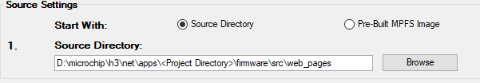
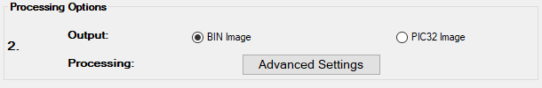
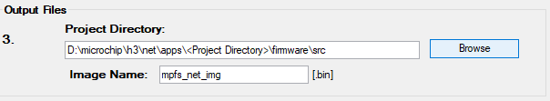
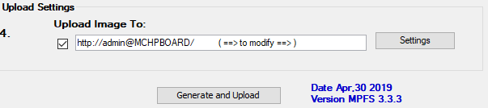

|
MPLAB Harmony TCP/IP Help
|
The MPFS Utility has four steps, which are indicated on the left hand side of the dialog.
To build an MPFS image, select Start With: Webpage Directory in Step 1 and choose the directory in which the web pages are stored.
The web page directory path from the <install-dir>/net/apps/ demonstration project needs to be provided.
The Source Directory path is stored in MPFSSettingDetails.xml for future access.

Step 2 selects the output format.
If storing the web pages in external EEPROM or serial Flash, choose the BIN Image output format.
If internal program memory will be used, select PIC32 Image for use with 32-bit devices. Refer to Advanced MPFS Settings for more information.
The configurable parameters of Output file format and Advance Settings are stored in MPFSSettingDetails.xml.

Step 3 asks for the TCP/IP MPLAB X IDE project directory. The MPFS utility will write the image file (e.g - mpfs_img_net.bin or mpfs_img_net.c) to the project directory and will also update the http_net_print.h and http_net_print.c files there if needed. Select the correct directory so that the right files are modified.
By default, the project directory path is one level above the source directory. Both the Project Directory and Image Name are configurable parameters, which are stored in MPFSSettingDetails.xml.

Step 4 controls the upload settings. When external EEPROM or serial Flash is used for storage, the option to upload the newly created image to the board is available. Check the box next to Upload Image To to enable this feature. The target host name (or IP address), upload protocol, and upload path may need to be changed to the one chosen when the board was first configured. You may also need to modify the user name and password used to access the secured functionality in your application, like web page upload. Use the Settings button to edit these values (see MPFS Upload Settings for more information).
If internal program memory is being used, the image will be compiled in with the project and so direct uploads are not available. Make sure to include the output source file indicated in Step 3 as part of the project.

|
MPLAB Harmony TCP/IP Help
|